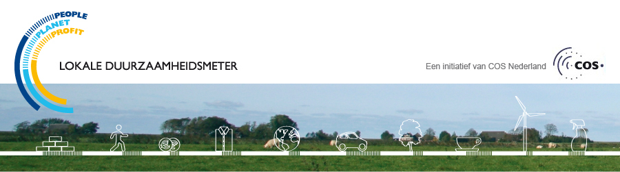

Duurzaamheidsmeter 2008
klimaat & water > uitleg
Gemeenten en provincies spelen een belangrijke rol in het klimaatbeleid omdat zij contact hebben met de betrokkenen die de reductie van broeikasgassen kunnen realiseren. Bij het terugdringen van CO2 moet men niet alleen denken aan duurzaam en alternatief energiebeleid maar ook aan duurzaam bouwen, duurzame mobiliteit en een beter beheer van de natuurlijke grondstoffen. Dat komt goed tot uitdrukking in deze duurzaamheidsmeter. Maar ook de effecten van klimaatverandering zijn merkbaar. Toenemende neerslag, stijging van de zeespeigel, overstromingen rond de rivieren zijn tekenen aan de wand. De aanpassing aan klimaatverandering is integraal onderdeel van het klimaatbeleid. Ook op dat gebied formuleren we concrete vragen.
Er zijn belangrijke activiteiten in het land op het gebied van lokaal klimaatbeleid. Vanuit de ministeries wordt, via het agentschap
SenterNovem, actief steun verleend aan lokale en provinciale overheden. Het
Klimaatportaal biedt de laatste wetenschappelijke inzichten. De campagne
Hier laat zien wat meer dan 40 maatschappelijke organisaties lokaal en internationaal kunnen doen.